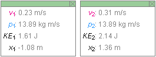
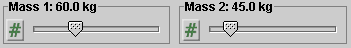
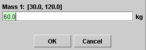
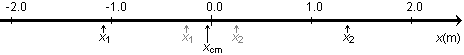

There are three basic control buttons. One of these, the Play/Pause button, is a dual button. The buttons are, from left to right:
-
 Returns
the simulation to the starting point with the
previously chosen settings. After clicking Rewind,
click Play to restart the motion.
Returns
the simulation to the starting point with the
previously chosen settings. After clicking Rewind,
click Play to restart the motion.
-
 Clicking
the Play button starts the race.
Clicking
the Play button starts the race.
 After
the Play button has been clicked, it changes into a
Pause button. Click the Pause button if you want to
get a 'snapshot' of the motion at a given instant.
When the Pause button has been clicked, it reverts
into the Play button. To resume the motion, click
Play once more.
After
the Play button has been clicked, it changes into a
Pause button. Click the Pause button if you want to
get a 'snapshot' of the motion at a given instant.
When the Pause button has been clicked, it reverts
into the Play button. To resume the motion, click
Play once more.
-
 Resets
the applet to its default setting.
Resets
the applet to its default setting.
Adjustments in the initial settings can only be made after first clicking REWIND or RESET.

The Velocities and Momenta buttons, when selected, will display the velocity and momentum vectors, respectively, of the two skaters or blocks.


The Data toggle button lets you display or hide the two Data boxes shown above pertaining to the skaters or blocks on the left or right, respectively. You can drag either Data box anywhere on the screen or even off the screen.
The subscript "1" is used for the block or skater on the left, the subscript "2" for the block or skater on the right.
The following data are displayed in the Data boxes:
- v: speed
- p: magnitude of momentum
- KE: kinetic energy
- x: position coordinate on the x-axis
The two radio buttons "Show Skaters" and "Show Blocks" let you display either two skaters or two blocks. The physical data pertaining to either skaters or blocks are identical, e.g., the momenta of the skaters have the same values as the momenta of the blocks.
There are two sliders, shown in the following image.

Clicking on a slider to the left or right of the slider tab allows fine adjustment of the slider setting.
Clicking on the Input Dialog button  of a slider will open a dialog for entering an exact value
for the slider setting. The dialog for the Mass-1 slider is
illustrated below. The range in which values can be entered,
from 30.0 kg to 120.0 kg in this case, is indicated above
the data entry field.
of a slider will open a dialog for entering an exact value
for the slider setting. The dialog for the Mass-1 slider is
illustrated below. The range in which values can be entered,
from 30.0 kg to 120.0 kg in this case, is indicated above
the data entry field.

The slider on the left lets you set the mass m1 of the left skater or block. The one on the right lets you set the mass m2 of the right skater or block.
Generally speaking for this applet, the subscript "1" is used to label data pertaining to the block or skater on the left, the subscript "2" for the skater or block on the right.

When the blocks are displayed, there is an x-axis displayed as well showing the x-coordinates of both the current and initial positions of the blocks, as well as the x-coordinate of the center of mass (CM) of the two-block system. The current coordinates are indicated by darker arrows and lettering than the initial coordinates.
The values of the x-coordinates of the current block positions are displayed in the two Data boxes (see Number 2) and that of the CM in the top middle of the applet window (see Number 7).
The x-axis can be dragged left and right when Rewind or Reset have been clicked. The axis cannot be dragged when the motion is paused or during the motion. When the axis is dragged to a new position, the values of the x-coordinates of all points are updated automatically.
When the blocks are displayed, the center of mass (CM) of the two-block system is displayed as well and indicated by an "X". The x-coordinate of the CM is indicated on the x-axis (see Number 6), and its value is displayed at the top middle of the applet window.
The time t elapsed since the beginning of the motion is displayed there as well.